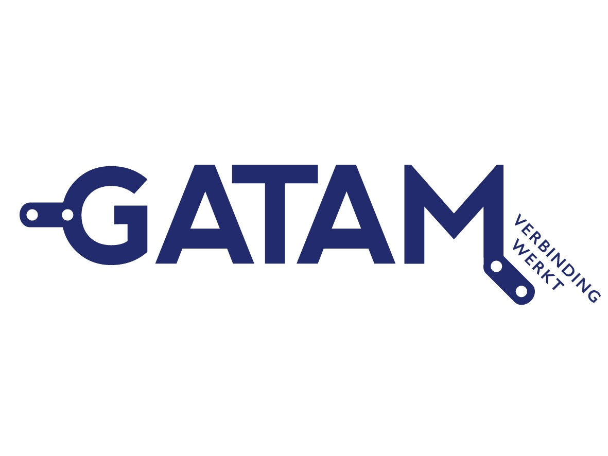

My Projects
Work I've done

AP Skills Analyzer
AP Skills and Curriculum Analyzer
A school project that collected skills from job vacancies and AP Hogeschool courses, normalized equivalent terms such as JS and JavaScript, clustered related skills, and compared industry demand with the curriculum to identify covered and missing skills.

Steelduxx Track & Trace
Customer Portal For Steelduxx
A track and trace website allowing users to track orders and their live locations, create new orders, register accounts, and obtain admin approval for accounts and orders with robust security features.
Tennis Match Finder
Tennis Match Finder
A mobile app allowing users to register, search for tennis matches in specific fields, and join matches on specific dates. Users can create matches, invite others, or join random public matches.
Healthcare App Design
Cardiff Healthcare App
An international project creating a prototype healthcare app design that helps support workers track individuals under care. The design focuses on allowing families to monitor care quality and helping caretakers plan daily activities, meals, medication, and more.

GATAM Platform
GATAM Teaching Platform
An educational platform where students can log in and complete learning modules, while staff can handle administrative tasks and monitor student progress. Built as a school project using Microsoft technologies.

VR Racing Game
VR Racing Game with AI
Developed a VR racing game with AI-powered opponents using ML agents. The project involved creating immersive racing experiences with realistic physics and competitive AI racers trained through machine learning.

Ensor VR Experience
James Ensor Interactive VR
Collaborated with students from diverse fields including medicine, fashion, and journalism to create an interactive VR experience about artist James Ensor. This cross-disciplinary project emphasized teamwork and effective communication.